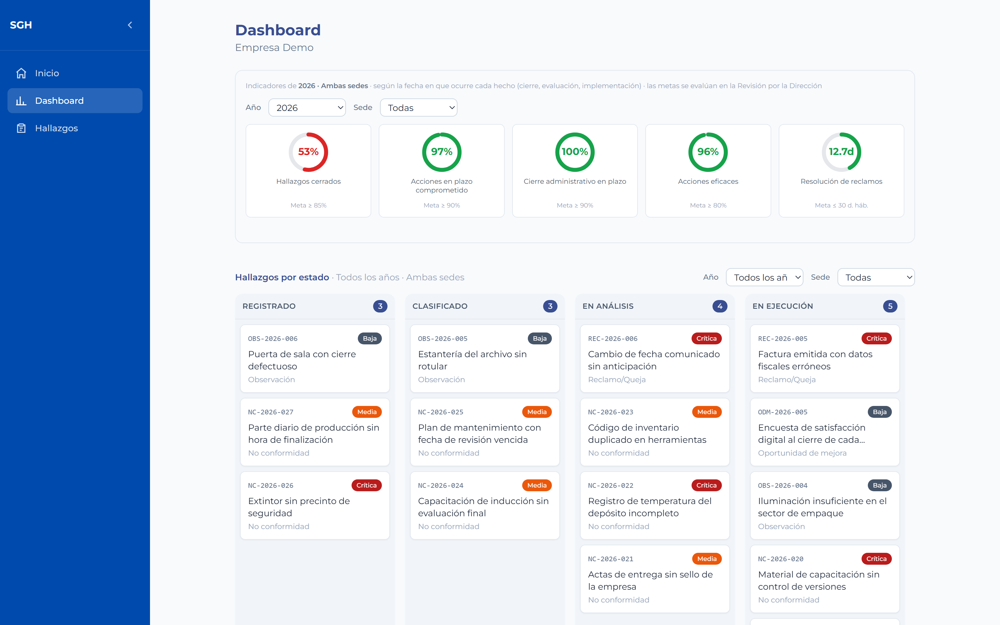
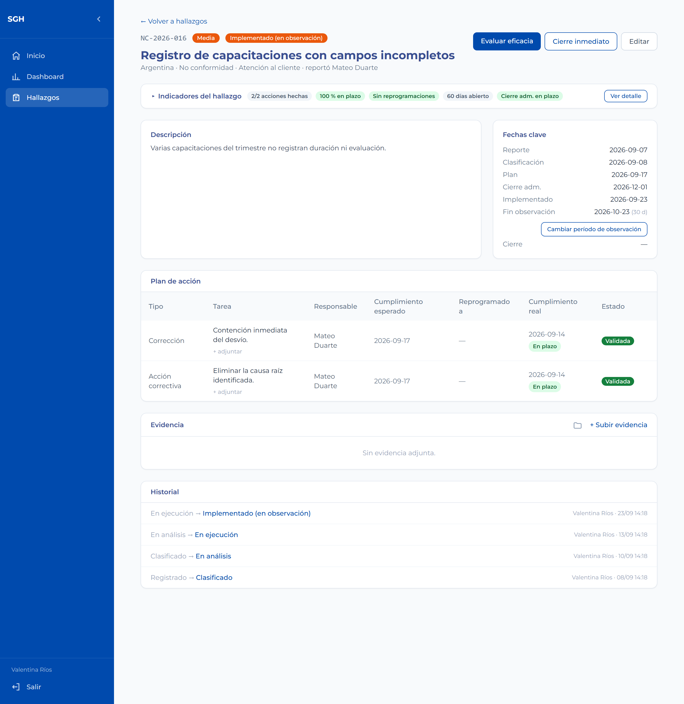
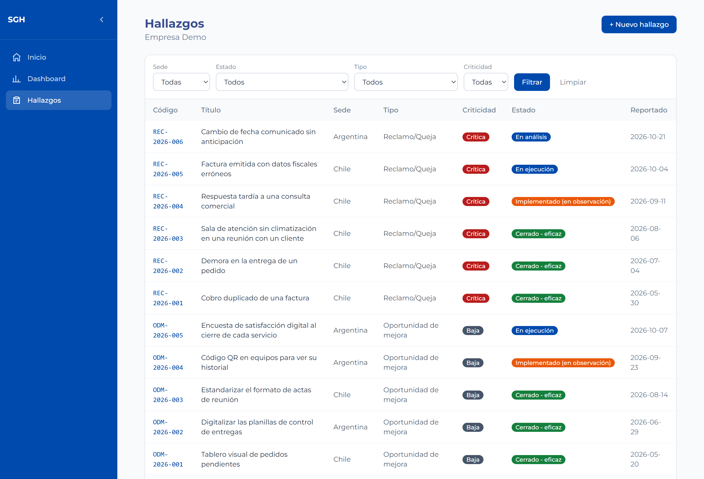

Un hallazgo no está resuelto cuando se hizo la acción, sino cuando se comprobó que el problema no volvió.

Cualquier situación del trabajo diario que conviene registrar para corregirla, mejorarla o aprender de ella.
Indicadores frente a sus metas y todos los hallazgos por estado, de un vistazo.
Plan de acción, fechas clave, evidencia, evaluación de eficacia e historial completo.

Lo diseñé y lo programé con ayuda de IA (Claude, de Anthropic), bajo mi dirección y revisión.
Eso permitió construir en poco tiempo un sistema completo, con sus reglas de calidad verificadas por pruebas automáticas.
Hay una demo online con datos ficticios para que recorras todo el ciclo. El link está en el primer comentario.
Si querés ver cómo se adaptaría a tu organización:
WhatsApp +54 9 11 5810-2420 josegodoyortiz98@gmail.com